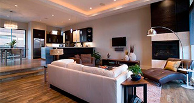
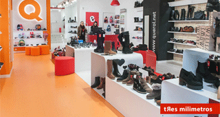
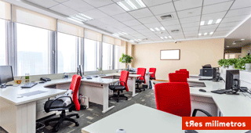

Los clientes particulares pueden beneficiarse de nuestra amplia experiencia en todo tipo de reformas. Trabajamos con todos los gremios en estrecha relación, de tal forma que podemos emprender cualquier reforma de vivienda.
Cada local tiene una serie de particularidades específicas El objetivo de nuestra empresa Tres Milimetros de reformas en Zaragoza, ha de ser sacar el máximo partido a estas para convertir el espacio en algo funcional, útil y atractivo estéticamente.
Los espacios de trabajo, como las oficinas, deben responder a una serie de requerimientos entre los que destacan la funcionalidad y la estética.
